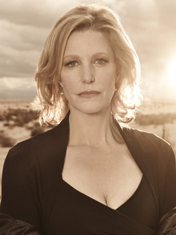

breaking bad
breaking bad
Breaking Bad is an American crime drama television series created and produced by Vince Gilligan for AMC. Set and filmed in Albuquerque, New Mexico, the series follows Walter White (Bryan Cranston), an underpaid, dispirited high-school chemistry teacher struggling with a recent diagnosis of stage-three lung cancer. White turns to a life of crime and partners with a former student, Jesse Pinkman (Aaron Paul), to produce and distribute methamphetamine to secure his family's financial future before he dies, while navigating the dangers of the criminal underworld. Breaking Bad premiered on AMC on January 20, 2008, and concluded on September 29, 2013, after five seasons consisting of 62 episodes. Among the show's co-stars are Anna Gunn and RJ Mitte as Walter's wife Skyler and son Walter Jr., and Betsy Brandt and Dean Norris as Skyler's sister Marie Schrader and her husband Hank, a DEA agent. Others include Bob Odenkirk as Walter's and Jesse's lawyer Saul Goodman, Jonathan Banks as private investigator and fixer Mike Ehrmantraut, and Giancarlo Esposito as drug kingpin Gus Fring. The final season introduces Jesse Plemons as the criminally ambitious Todd Alquist, and Laura Fraser as Lydia Rodarte-Quayle, a cunning business executive.
homewalter white

Walter Hartwell White Sr., also known by his alias Heisenberg, is the fictional antihero[a] turned villain protagonist of the American crime drama television series Breaking Bad, portrayed by Bryan Cranston. White is a skilled chemist who co-founded a technology firm before he accepted a buy-out from his partners. While his partners became wealthy, Walter became a high school chemistry teacher in Albuquerque, barely making ends meet with his family: his wife Skyler (Anna Gunn) and son Walter Jr. (RJ Mitte). At the start of the series, the day after his 50th birthday, White is diagnosed with Stage III lung cancer. After this discovery, White decides to manufacture and sell methamphetamine with a former student, Jesse Pinkman (Aaron Paul), to ensure his family's financial security after his death. Due to his expertise, White's "blue meth" is purer than any other on the market, and he is pulled deeper into the illicit drug trade. White becomes increasingly ruthless and unsympathetic as the series progresses, as series creator Vince Gilligan wanted him to turn from "Mr. Chips into Scarface". He adopts the alias "Heisenberg", which becomes recognizable as a kingpin figure in the Southwestern drug trade. White struggles with managing his family while hiding his involvement in the drug business from his brother-in-law, DEA agent Hank Schrader (Dean Norris). Although AMC officials initially hesitated to cast Cranston due to his previous comedic role on Malcolm in the Middle, Gilligan cast him based on the actor's past performance in The X-Files episode "Drive", which Gilligan wrote. Cranston contributed greatly to the creation of his character, including White's backstory, personality, and physical appearance. Both the character and Cranston's performance have received critical acclaim, with Walter White frequently being mentioned as one of the greatest and most iconic television characters of all time. Cranston won four Primetime Emmy Awards for Outstanding Lead Actor in a Drama Series, three of them being consecutive. He is the first man to win a Critics' Choice, Golden Globe, Primetime Emmy, and Screen Actors Guild Award for his performance. Cranston reprised the role of Walt in a flashback for Breaking Bad's sequel film El Camino, and again in the sixth and final season of the prequel series Better Call Saul, making him one of the few characters to appear in all three, alongside Jesse Pinkman, Mike Ehrmantraut (Jonathan Banks), Ed Galbraith (Robert Forster), and Austin Ramey (Todd Terry).
homejesse pinkman

Jesse Bruce Pinkman is a fictional character in the American crime drama television series Breaking Bad, portrayed by Aaron Paul. He is a crystal meth cook and dealer who works with his former high school chemistry teacher, Walter White (played by Bryan Cranston). Jesse is the only character besides Walter to appear in every episode of the show. Paul reprised the role for the 2019 spin-off sequel film El Camino: A Breaking Bad Movie, set after its finale, and again in 2022 for the sixth and final season of the spin-off prequel sequel series Better Call Saul, being one of the few characters to appear across both shows and the movie.[1] Despite initial plans to kill off the character at the end of the first season, Paul's performance convinced the showrunner and head writer Vince Gilligan to keep Jesse in the show.[2] The character and Paul's performance received acclaim from critics and fans. Critics especially praised Jesse's character development from an unsympathetic drug dealer to the moral compass of the show as he becomes increasingly guilty and remorseful for his and Walter White's actions while involved in the drug trade.[3] For his portrayal, Paul won the Primetime Emmy Award for Outstanding Supporting Actor in a Drama Series in 2010, 2012, and 2014, making him the first actor to win the category three times since its separation into drama and comedy. In-universe biography Pre-Breaking Bad Jesse Bruce Pinkman[4] was born into a middle-class family in Albuquerque, New Mexico. At the time the series starts, he has long been estranged from his parents due to his drug addiction and lifestyle as a drug dealer. After being forced to leave his parents' residence, Jesse moved in with his Aunt Ginny, for whom he cared until her death from cancer; as a result, he became very knowledgeable about the disease. Afterward, he was allowed to stay in her home, the ownership of which fell to Jesse's parents. Jesse was a poor student in high school and preferred hanging out with his friends and smoking marijuana to studying. Walter White, whom Jesse almost always calls "Mr. White", was his chemistry teacher and gave Jesse a failing grade in his class. Walt himself later says that he never thought Jesse would amount to much,[5] although Jesse's mother Diane (Tess Harper) recalls that Walt "must have seen some potential in Jesse; he really tried to motivate him. He was one of the few teachers who cared."[6] Despite his poor academic standing, Jesse was able to graduate, with Walt present on stage when he received his diploma.[7] In his first chronological appearance, which took place in 2004 during the Better Call Saul episode "Waterworks", Jesse is outside of Saul Goodman's office when Kim Wexler (Rhea Seehorn) emerges after having signed their divorce papers. As Jesse takes a cigarette from Kim, he recognizes her as the public defender who got his friend Christian "Combo" Ortega out of trouble after he stole the Baby Jesus from a Nativity display. Jesse is there with Emilio Koyama, who decided to hire Saul based on a TV advertisement. Jesse asks Kim if Saul is a good lawyer, to which she replies, "when I knew him, he was."[8]
homegustavo fring
Gustavo Fring is a fictional character portrayed by Giancarlo Esposito in the Breaking Bad franchise, serving as the main antagonist in the crime drama series Breaking Bad and a major character in its prequel Better Call Saul. He is a Chilean-American businessman and major narcotics distributor in the Southwestern United States who uses several legitimate businesses, including a chain of successful fast food restaurants called Los Pollos Hermanos (The Chicken Brothers) and an industrial laundry facility called Lavandería Brillante (Bright Laundry), as fronts used to launder money for a vast drug operation. Though outwardly he works with the Mexican cartel to distribute cocaine, he secretly plots revenge against its members over the death of his business associate and romantic partner Maximino "Max" Arciniega at the hands of his sworn archenemy Hector Salamanca, the patriarch of the cartel-backed drug trade in the Southwest. To become independent of the cartel's meth, he constructs a secret lab under his industrial laundry to manufacture methamphetamine. Fring was created as a character to replace that of Tuco Salamanca (played by departing actor Raymond Cruz) during the second season of Breaking Bad. Gus, as a stoic businessman, was created to be opposite to the chaotic Tuco and act as a foil to protagonist Walter White. The character has received high acclaim, with critics hailing Gus as one of the best villains in television; as such, Esposito's performance in the role has earned him several nominations and awards.
homemike ehrmantraut
Michael Ehrmantraut (/ˈɜːrməntraʊt/)[1] is a fictional character portrayed by Jonathan Banks in the television series Breaking Bad and its spinoff prequel Better Call Saul.[2] Mike is a former Philadelphia police officer and United States Marine Corps veteran who works for Gus Fring—and, on occasion, Saul Goodman—as a private investigator, head of security, cleaner, and hitman. While an officer in Philadelphia, he engaged in corrupt activities that indirectly led to the death of his son Matt, leading Mike to move to Albuquerque to watch over and financially support his daughter-in-law Stacey and granddaughter Kaylee through jobs in the criminal underworld. Mike as a character has been praised by critics and Banks' performance has received several acting awards and nominations.
homeskyler white

Skyler White (née Lambert)[1] is a fictional character in Breaking Bad, portrayed by Anna Gunn. Skyler is married to protagonist Walter White. For her performance, Gunn received critical acclaim. She won two Primetime Emmy Awards for Outstanding Supporting Actress in a Drama Series, in 2013 and 2014, and has received 3 nominations.
home